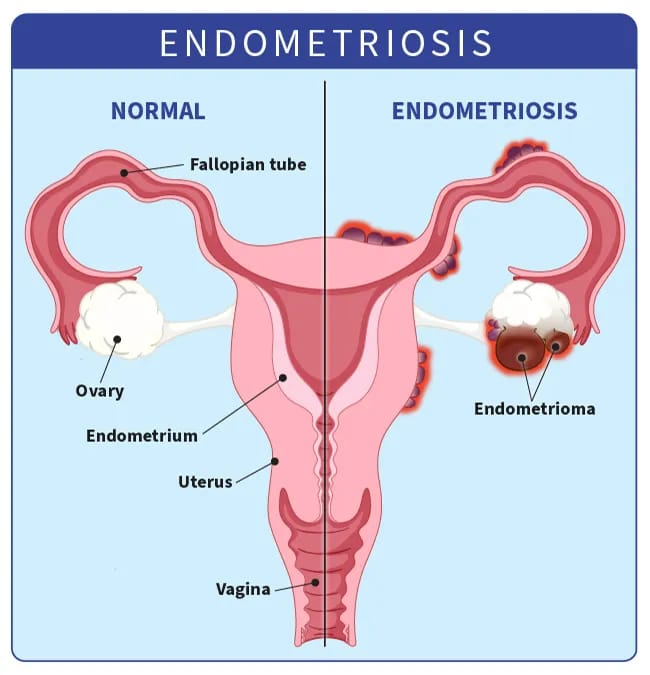

Guide
Endometriosis is a chronic condition that affects around 176 MILLION women worldwide — about 1 in 10 women and girls of reproductive age, according to the World Health Organization (2025).
It occurs when tissue similar to the lining of the uterus (the endometrium) grows outside the uterus — commonly on the ovaries, fallopian tubes, bowel, bladder, or pelvic lining. This tissue behaves like normal endometrium: it thickens and responds to hormones during the menstrual cycle. But because it has no way to leave the body, it can cause inflammation, irritation, scarring, and adhesions, making organs stick together painfully.
Pain: the most common — and misunderstood — symptom
Pain is the symptom most people associate with endometriosis, but it can feel very different from person to person.
Many women describe:
• Deep pelvic pain
• A throbbing or stabbing ache in the lower belly, lower back, hips, or thighs
• Pain that becomes much worse before and during periods
For many, period pain isn’t “just cramps.” Severe menstrual pain (dysmenorrhea) can be debilitating and often starts in the teenage years. This pain is frequently dismissed as “normal,” which delays diagnosis and treatment.
Pain beyond periods
Endometriosis pain doesn’t always stop when the period ends. Common experiences include:
• Pain during or after sex (dyspareunia), reported by up to 70% of people with endometriosis
• Pain with bowel movements or urination, especially during periods
• Sharp, deep pain that can linger for hours or days
When endometriosis affects the bowel or bladder (called deep infiltrating endometriosis), symptoms may include:
• Bloating (“endo belly”)
• Diarrhea or constipation
• Cramping with bowel movements (dyschezia)
• Burning or pain when urinating (dysuria)
These symptoms are often mistaken for IBS or other digestive conditions.
Heavy bleeding and exhaustion
Many women experience heavy or prolonged periods (menorrhagia) with passing large clots and bleeding that interferes with daily life.
Chronic fatigue is also extremely common. This isn’t just feeling tired — it’s a deep, ongoing exhaustion that rest doesn’t fix. Pain, inflammation, poor sleep, and low iron levels often contribute.
Fertility and reproductive health
About 30–50% of women with endometriosis experience difficulty getting pregnant. Scar tissue, inflammation, blocked fallopian tubes, or ovarian cysts called endometriomas (“chocolate cysts”) can all play a role.
Other possible symptoms:
• Nausea or vomiting around periods
• Headaches or migraines linked to hormones
• Leg pain from nerve irritation
• Shoulder or chest pain (rare cases involving the diaphragm)
• Mood changes, anxiety, or depression
Rarely, endometriosis can affect areas outside the pelvis, such as the lungs or skin — but for most people, it remains within the pelvic area.
The emotional impact
Endometriosis doesn’t just affect the body — it affects every part of life like school and work, relationships and intimacy, self-confidence and mental health.
Living with unpredictable pain can feel isolating and overwhelming. Many women struggle with anxiety, depression, and the feeling of not being believed.
And if you recognize yourself in any of this — you are not imagining it. Your pain is real.
What Causes Endometriosis?
The honest answer is this: we don’t fully know yet.
Endometriosis is complex, and there is no single cause. Instead, it appears to develop from a combination of factors — different for every woman. Doctors and researchers agree on is that endometriosis is multifactorial, meaning genetics, hormones, the immune system, inflammation, and environmental influences all play a role.
Important: nothing you did caused this.
A condition shaped by inflammation and immunity
Recent large-scale studies (2025) from institutions such as UC San Francisco, Oxford, and Yale suggest that endometriosis is closely linked to immune and inflammatory pathways. These studies also show overlap with other conditions like migraines, Crohn’s disease, autoimmune disorders, anxiety, and depression — helping explain why endometriosis often affects the whole body, not just the pelvis.
Retrograde menstruation: one piece of the puzzle
One of the earliest and most well-known theories is retrograde menstruation, first described in 1927. During menstruation, some blood flows backward through the fallopian tubes into the pelvic cavity, carrying endometrial-like cells with it.
This happens in most women — but in people with endometriosis, the body doesn’t clear these cells properly. Instead, they attach, survive, and continue to grow.
When cells change or travel
Other theories help explain cases that retrograde menstruation alone cannot:
• Metaplasia theory: cells lining the abdomen may transform into endometrial-like tissue under the influence of hormones or inflammation
• Stem cell theory: embryonic or bone marrow stem cells may migrate and develop into endometriosis tissue
• Lymphatic or blood spread: cells may travel through blood or lymph vessels to distant areas, such as the lungs
These theories help explain why endometriosis can appear in unexpected places — and even, very rarely, in men or before puberty.
Genetics: a strong influence
Genetics play a major role. If your mother or sister has endometriosis, your risk increases six to ten times. Recent genetic studies have identified variations in genes involved in inflammation, immune response, hormone signaling and tissue adhesion.
Hormones play a big role in endometriosis. The main driver is estrogen—it acts like fuel, helping the misplaced tissue grow and spread. At the same time, the body often becomes resistant to progesterone (the hormone that normally keeps things in balance), so the tissue doesn’t respond properly and keeps building up. The immune system, which should spot and clear these out-of-place cells, doesn’t work as it should: natural killer cells fail to destroy them, while other immune cells called macrophages actually help the tissue survive instead of removing it. This leads to ongoing low-level inflammation, driven by chemicals in the body like IL-6 and TNF-α, which encourage new blood vessels to form (angiogenesis) and create scar tissue (fibrosis). Everyday environmental factors can make things worse—chemicals like dioxins and phthalates (found in some plastics and products) can mimic estrogen or weaken the immune system. An unbalanced gut microbiome can add to whole-body inflammation, while oxidative stress and changes in how genes are switched on or off (epigenetics) also contribute. Recent research from 2025 shows stronger links to autoinflammatory and autoimmune conditions, such as a possible connection with rheumatoid arthritis, opening doors to repurposing existing drugs. In the end, endometriosis likely starts with retrograde menstruation (cells flowing backward), combined with genetic vulnerability, immune system glitches, hormonal imbalance, and environmental triggers. The more we understand these pieces, the closer we get to new, non-hormonal treatments that target inflammation or the immune response directly—offering hope for gentler, more effective options.
Researchers have also found shared genetic links between endometriosis and autoimmune conditions (like rheumatoid arthritis or multiple sclerosis), as well as mental health conditions — reinforcing that this disease affects the whole system.
Hormones and immune imbalance
Estrogen is a key driver of endometriosis. It acts like fuel, encouraging lesions to grow and spread. At the same time, many women develop progesterone resistance, meaning the hormone that normally balances estrogen doesn’t work as it should.
The immune system also plays a role. Cells that should destroy misplaced tissue fail to do so, while others actually help the lesions survive. This leads to chronic inflammation, scarring (fibrosis), and the growth of new blood vessels that feed the disease.
Environmental and lifestyle influences
Environmental factors may worsen or trigger endometriosis in susceptible people. These include:
• chemicals that mimic estrogen (such as dioxins or phthalates)
• chronic stress
• gut microbiome imbalances
• oxidative stress
• epigenetic changes (how genes are switched on or off)
These influences don’t cause endometriosis on their own — but they may tip the balance in an already vulnerable system.
Why this understanding matters?
New research increasingly links endometriosis to autoimmune and autoinflammatory conditions, opening the door to non-hormonal treatments that target inflammation and immune dysfunction directly.
The more we understand these mechanisms, the closer we get to treatments that are gentler, more effective, and focused on healing — not just symptom suppression.
Diagnosing endometriosis can be really challenging, and that's one of the reasons many people wait so long—on average 7 to 10 years—to get an answer, according to guidelines from organizations like ESHRE (European Society of Human Reproduction and Embryology) and ACOG (American College of Obstetricians and Gynecologists). In teenagers and young women, the delay is often even longer because severe period pain is frequently dismissed as "normal." The symptoms are nonspecific—they overlap with many other conditions like irritable bowel syndrome, pelvic inflammatory disease, or even just stress—so doctors can't rely on symptoms alone to be sure.
The process usually starts with a thorough conversation about your medical history. Your doctor will ask detailed questions about your pain (when it happens, how bad it is, what makes it better or worse), your periods, any family history of endometriosis, pain during sex, bowel or bladder issues, and whether you've been trying to conceive. This history is incredibly valuable because patterns often point strongly toward endometriosis.
Next comes a pelvic exam, where the doctor gently checks for tenderness, nodules, or anything unusual in the uterus or ovaries. Unfortunately, in early or milder cases, the exam can feel completely normal, so a "normal" result doesn't rule endometriosis out.
The first imaging test most doctors recommend is a transvaginal ultrasound (an internal scan using sound waves). When performed by someone experienced in endometriosis, it’s very good at spotting ovarian cysts (endometriomas) and deeper lesions. According to the ESHRE 2022 guidelines, expert ultrasound is now considered one of the most reliable noninvasive tools available.
If deeper involvement is suspected (for example, on the bowel or bladder), an MRI is often the next step. It gives clearer pictures of soft tissues and helps map out exactly where the disease might be before any surgery.
For many years, laparoscopy (a minimally invasive surgery with a camera) was called the "gold standard" because it allows doctors to see the lesions directly and take small tissue samples (biopsies) for lab confirmation—the only way to be 100% certain. Today, laparoscopy is still the most definitive test, but it's used more selectively: if high-quality imaging already shows clear signs, or if hormonal treatment helps symptoms, surgery might not be needed right away for diagnosis alone.
Blood tests like CA-125 (a marker sometimes raised in endometriosis) are not reliable enough on their own—they can be normal in endometriosis or raised for many other reasons. Researchers are studying newer markers like microRNAs (miRNAs), but nothing is ready for everyday use yet.
Sometimes doctors use an empirical (trial) approach: they prescribe hormonal treatment (like the pill or progestins) and see if symptoms improve dramatically. A clear positive response strongly supports an endometriosis diagnosis without immediate surgery.
In adolescents and young women, early evaluation is especially important because starting treatment sooner can help protect future fertility and prevent the disease from worsening. Seeing a specialist—a gynecologist with extra training in endometriosis—makes a huge difference, as they’re more familiar with subtle signs and advanced imaging techniques, which can shorten the long road to diagnosis considerably. You deserve answers, and the right doctor will listen and take the steps needed to find them.
Although there’s no cure for endometriosis yet, there are many effective ways to manage pain, improve fertility chances, and enhance overall quality of life. Treatment is always personalized—it depends on how severe your symptoms are, your age, whether you want to get pregnant now or later, and how you respond to different options. The goal is to reduce inflammation, control lesion growth, and give you relief while minimizing side effects.
For pain relief, doctors often start with simple over-the-counter medications like NSAIDs (non-steroidal anti-inflammatory drugs), such as ibuprofen, naproxen, or diclofenac. These help by reducing prostaglandins (body chemicals that ramp up cramps and inflammation) and are a good first step for mild to moderate pain. If NSAIDs aren't enough or cause stomach issues, acetaminophen (Tylenol) can be a gentler alternative for pain without targeting inflammation. In tougher cases, prescription options like fenoprofen (a stronger NSAID recently studied in animal models and showing promise for reversing endometriosis-related gene changes) or even short-term opioids might be considered, though opioids are used cautiously due to addiction risks. Some people also benefit from anticonvulsants (like gabapentin or pregabalin) or low-dose antidepressants (such as duloxetine or amitriptyline), which calm nerve signals and help with chronic neuropathic pain—common when endometriosis irritates nerves.
The most common next step is hormonal therapies, which work by lowering estrogen levels or stopping ovulation, giving the misplaced tissue a chance to shrink and calm down. These include combined oral contraceptives (often taken continuously to skip periods), progestin-only options (like the Mirena IUD or pills such as dienogest), and newer oral GnRH antagonists such as elagolix (Orilissa), relugolix combination therapy (Ryeqo), and linzagolix (Yselty)—with recent 2025 approvals and expansions in places like the UK NHS and Taiwan making them more accessible. These daily pills are flexible—you can adjust doses to balance symptom relief with side effects like hot flashes or bone density changes—and many are taken with a low-dose "add-back" hormone to protect bones and reduce menopausal-like symptoms.
Surgery is another strong option, especially if medication isn’t enough or you have large cysts or deep lesions. The preferred approach is laparoscopic excision, where specialists carefully cut out the endometriosis tissue rather than just burning it—this often gives longer-lasting relief and better fertility outcomes. Robotic-assisted surgery is advancing quickly, making procedures more precise and recovery faster.
For those trying to conceive, surgery can help in mild to moderate cases by removing blockages or inflammation, while IVF (in vitro fertilization) is often the best path for more severe endometriosis.
Many people also find relief through complementary approaches supported by growing evidence, such as an anti-inflammatory diet (rich in fruits, vegetables, omega-3s, and low in red meat/processed foods), gentle exercise, pelvic floor physiotherapy, acupuncture, and mindfulness techniques to ease the stress-pain cycle.
Exciting emerging treatments are focusing on non-hormonal options to target inflammation or blood vessel growth directly. These include repurposed drugs like fenoprofen (showing strong results in recent NIH-funded animal studies for pain and inflammation), dichloroacetate (DCA) (in ongoing EPiC2 trials to find the best dose for reducing pain without side effects), and monoclonal antibodies like HMI-115 (positive phase 2 results in 2025 for significant pain reduction). There's also growing interest in cannabis and CBD oil: real-world data from 2025 UK registries and surveys show many patients report better pain control, improved sleep, reduced gastrointestinal symptoms, and less need for other meds with medical cannabis (often THC/CBD combinations) or CBD alone. Ongoing trials (like ENDOCAN-1 and DREAMLAND) are testing CBD doses for safety and effectiveness, with early signs it calms inflammation via the endocannabinoid system without the "high" of THC. While not yet standard, cannabis-based products are promising for those seeking natural alternatives, especially where legal.
The best approach is often multidisciplinary—working with a team that includes gynecologists, pain specialists, psychologists, nutritionists, and physiotherapists. Mental health support is crucial because chronic pain can feel overwhelming. With the right combination, many women live much more comfortably, and ongoing research brings real hope for even better, gentler options ahead. Always talk to an endometriosis specialist to find what fits you best.
Carol